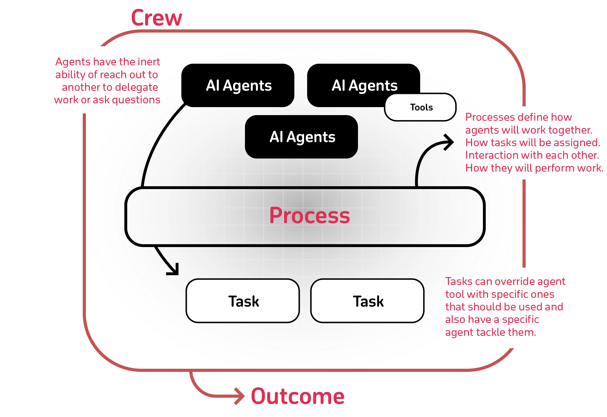

Introduction#
Build AI agent teams that work together to tackle complex tasks
What is CrewAI?#
CrewAI is a cutting-edge framework for orchestrating autonomous AI agents.
CrewAI enables you to create AI teams where each agent has specific roles, tools, and goals, working together to accomplish complex tasks.
Think of it as assembling your dream team - each member (agent) brings unique skills and expertise, collaborating seamlessly to achieve your objectives.
How CrewAI Works#
Just like a company has departments (Sales, Engineering, Marketing) working together under leadership to achieve business goals, CrewAI helps you create an organization of AI agents with specialized roles collaborating to accomplish complex tasks.

| Component | Description | Key Features |
|---|---|---|
| Crew | The top-level organization | • Manages AI agent teams • Oversees workflows • Ensures collaboration • Delivers outcomes |
| AI Agents | Specialized team members | • Have specific roles (researcher, writer) • Use designated tools • Can delegate tasks • Make autonomous decisions |
| Process | Workflow management system | • Defines collaboration patterns • Controls task assignments • Manages interactions • Ensures efficient execution |
| Tasks | Individual assignments | • Have clear objectives • Use specific tools • Feed into larger process • Produce actionable results |
How It All Works Together#
- The Crew organizes the overall operation
- AI Agents work on their specialized tasks
- The Process ensures smooth collaboration
- Tasks get completed to achieve the goal
Key Features#
- Role-Based Agents: Create specialized agents with defined roles, expertise, and goals - from researchers to analysts to writers
- Flexible Tools: Equip agents with custom tools and APIs to interact with external services and data sources
- Intelligent Collaboration: Agents work together, sharing insights and coordinating tasks to achieve complex objectives
- Task Management: Define sequential or parallel workflows, with agents automatically handling task dependencies
Why Choose CrewAI?#
- Autonomous Operation: Agents make intelligent decisions based on their roles and available tools
- Natural Interaction: Agents communicate and collaborate like human team members
- Extensible Design: Easy to add new tools, roles, and capabilities
- Production Ready: Built for reliability and scalability in real-world applications
CrewAI Examples#
A collection of examples that show how to use CrewAI framework to automate workflows.
- recruitment
AI Crew for Recruitment#
Introduction#
This project demonstrates the use of the CrewAI framework to automate the recruitment process. CrewAI orchestrates autonomous AI agents, enabling them to collaborate and execute complex tasks efficiently.
CrewAI Framework#
CrewAI is designed to facilitate the collaboration of role-playing AI agents. In this example, these agents work together to streamline the recruitment process, ensuring the best fit between candidates and job roles.
Running the Script#
Disclaimer: This will use gpt-4o unless you change it to use a different model, and by doing so it may incur different costs.
- Configure Environment: Copy .env.example and set up the environment variables for OpenAI and other tools as needed.
.env
- Install Dependencies: Run poetry lock && poetry install
- Customize: Modify src/recruitment/main.py to add custom inputs for your agents and tasks.
- Customize Further: Check src/recruitment/config/agents.yaml to update your agents and src/recruitment/config/tasks.yaml to update your tasks.
- Custom Tools: You can find custom tools at recruitment/src/recruitment/tools/
- Execute the Script: Run poetry run recruitment and input your project details.
Details & Explanation#
- Running the Script: Execute poetry run recruitment. The script will leverage the CrewAI framework to automate recruitment tasks and generate a detailed report.
- Running Training: Execute poetry run train n where n is the number of training iterations.
- Key Components:
src/recruitment/main.py:Main script file.src/recruitment/crew.py:Main crew file where agents and tasks come together, and the main logic is executed.src/recruitment/config/agents.yaml:Configuration file for defining agents.src/recruitment/config/tasks.yaml:Configuration file for defining tasks.src/recruitment/tools:Contains tool classes used by the agents.
config/agents.yaml:
researcher:
role: >
Job Candidate Researcher
goal: >
Find potential candidates for the job
backstory: >
You are adept at finding the right candidates by exploring various online
resources. Your skill in identifying suitable candidates ensures the best
match for job positions.
matcher:
role: >
Candidate Matcher and Scorer
goal: >
Match the candidates to the best jobs and score them
backstory: >
You have a knack for matching the right candidates to the right job positions
using advanced algorithms and scoring techniques. Your scores help
prioritize the best candidates for outreach.
communicator:
role: >
Candidate Outreach Strategist
goal: >
Develop outreach strategies for the selected candidates
backstory: >
You are skilled at creating effective outreach strategies and templates to
engage candidates. Your communication tactics ensure high response rates
from potential candidates.
reporter:
role: >
Candidate Reporting Specialist
goal: >
Report the best candidates to the recruiters
backstory: >
You are proficient at compiling and presenting detailed reports for recruiters.
Your reports provide clear insights into the best candidates to pursue.
config/tasks.yaml
research_candidates_task:
description: >
Conduct thorough research to find potential candidates for the specified job.
Utilize various online resources and databases to gather a comprehensive list of potential candidates.
Ensure that the candidates meet the job requirements provided.
Job Requirements:
{job_requirements}
expected_output: >
A list of 10 potential candidates with their contact information and brief profiles highlighting their suitability.
match_and_score_candidates_task:
description: >
Evaluate and match the candidates to the best job positions based on their qualifications and suitability.
Score each candidate to reflect their alignment with the job requirements, ensuring a fair and transparent assessment process.
Don't try to scrape people's linkedin, since you don't have access to it.
Job Requirements:
{job_requirements}
expected_output: >
A ranked list of candidates with detailed scores and justifications for each job position.
outreach_strategy_task:
description: >
Develop a comprehensive strategy to reach out to the selected candidates.
Create effective outreach methods and templates that can engage the candidates and encourage them to consider the job opportunity.
Job Requirements:
{job_requirements}
expected_output: >
A detailed list of outreach methods and templates ready for implementation, including communication strategies and engagement tactics.
report_candidates_task:
description: >
Compile a comprehensive report for recruiters on the best candidates to put forward.
Summarize the findings from the previous tasks and provide clear recommendations based on the job requirements.
expected_output: >
A detailed report with the best candidates to pursue, no need to include the job requirements formatted as markdown without '```', including profiles, scores, and outreach strategies.
tools/client.py
import os
import urllib
from selenium.webdriver.common.by import By
from .driver import Driver
class Client:
def __init__(self):
url = 'https://linkedin.com/'
cookie = {
"name": "li_at",
"value": os.environ["LINKEDIN_COOKIE"],
"domain": ".linkedin.com"
}
self.driver = Driver(url, cookie)
def find_people(self, skills):
skills = skills.split(",")
search = " ".join(skills)
encoded_string = urllib.parse.quote(search.lower())
url = f"https://www.linkedin.com/search/results/people/?keywords={encoded_string}"
self.driver.navigate(url)
people = self.driver.get_elements("ul li div div.linked-area")
results = []
for person in people:
try:
result = {}
result["name"] = person.find_element(By.CSS_SELECTOR, "span.entity-result__title-line").text
result["position"] = person.find_element(By.CSS_SELECTOR, "div.entity-result__primary-subtitle").text
result["location"] = person.find_element(By.CSS_SELECTOR, "div.entity-result__secondary-subtitle").text
result["profile_link"] = person.find_element(By.CSS_SELECTOR, "a.app-aware-link").get_attribute("href")
except Exception as e:
print(e)
continue
results.append(result)
return results
def close(self):
self.driver.close()
tools/driver.py
import time
from selenium import webdriver
from selenium.webdriver.common.by import By
from selenium.webdriver.firefox.options import Options
class Driver:
def __init__(self, url, cookie=None):
self.driver = self._create_driver(url, cookie)
def navigate(self, url, wait=3):
self.driver.get(url)
time.sleep(wait)
def scroll_to_bottom(self, wait=3):
self.driver.execute_script("window.scrollTo(0, document.body.scrollHeight);")
time.sleep(wait)
self.driver.execute_script("window.scrollTo(0, document.body.scrollHeight);")
time.sleep(wait)
def get_element(self, selector):
return self.driver.find_element(By.CSS_SELECTOR, selector)
def get_elements(self, selector):
return self.driver.find_elements(By.CSS_SELECTOR, selector)
def fill_text_field(self, selector, text):
element = self.get_element(selector)
element.clear()
element.send_keys(text)
def click_button(self, selector):
element = self.get_element(selector)
element.click()
def _create_driver(self, url, cookie):
options = Options()
# options.add_argument("--headless")
driver = webdriver.Firefox(options=options)
driver.get(url)
if cookie:
driver.add_cookie(cookie)
return driver
def close(self):
self.driver.close()
tools/linkedin.py
from crewai_tools import BaseTool
from .client import Client as LinkedinClient
class LinkedInTool(BaseTool):
name: str = "Retrieve LinkedIn profiles"
description: str = (
"Retrieve LinkedIn profiles given a list of skills. Comma separated"
)
def _run(self, skills: str) -> str:
linkedin_client = LinkedinClient()
people = linkedin_client.find_people(skills)
people = self._format_publications_to_text(people)
linkedin_client.close()
return people
def _format_publications_to_text(self, people):
result = ["\n".join([
"Person Profile",
"-------------",
p['name'],
p['position'],
p['location'],
p["profile_link"],
]) for p in people]
result = "\n\n".join(result)
return result
crew.py
from crewai import Agent, Crew, Process, Task
from crewai.project import CrewBase, agent, crew, task
from crewai_tools import SerperDevTool, ScrapeWebsiteTool
from recruitment.tools.linkedin import LinkedInTool
@CrewBase
class RecruitmentCrew():
"""Recruitment crew"""
agents_config = 'config/agents.yaml'
tasks_config = 'config/tasks.yaml'
@agent
def researcher(self) -> Agent:
return Agent(
config=self.agents_config['researcher'],
tools=[SerperDevTool(), ScrapeWebsiteTool(), LinkedInTool()],
allow_delegation=False,
verbose=True
)
@agent
def matcher(self) -> Agent:
return Agent(
config=self.agents_config['matcher'],
tools=[SerperDevTool(), ScrapeWebsiteTool()],
allow_delegation=False,
verbose=True
)
@agent
def communicator(self) -> Agent:
return Agent(
config=self.agents_config['communicator'],
tools=[SerperDevTool(), ScrapeWebsiteTool()],
allow_delegation=False,
verbose=True
)
@agent
def reporter(self) -> Agent:
return Agent(
config=self.agents_config['reporter'],
allow_delegation=False,
verbose=True
)
@task
def research_candidates_task(self) -> Task:
return Task(
config=self.tasks_config['research_candidates_task'],
agent=self.researcher()
)
@task
def match_and_score_candidates_task(self) -> Task:
return Task(
config=self.tasks_config['match_and_score_candidates_task'],
agent=self.matcher()
)
@task
def outreach_strategy_task(self) -> Task:
return Task(
config=self.tasks_config['outreach_strategy_task'],
agent=self.communicator()
)
@task
def report_candidates_task(self) -> Task:
return Task(
config=self.tasks_config['report_candidates_task'],
agent=self.reporter(),
context=[self.research_candidates_task(), self.match_and_score_candidates_task(), self.outreach_strategy_task()],
)
@crew
def crew(self) -> Crew:
"""Creates the Recruitment crew"""
return Crew(
agents=self.agents,
tasks=self.tasks,
process=Process.sequential,
verbose=2,
)
main.py
#!/usr/bin/env python
import sys
from recruitment.crew import RecruitmentCrew
def run():
# Replace with your inputs, it will automatically interpolate any tasks and agents information
inputs = {
'job_requirements': """
job_requirement:
title: >
Ruby on Rails and React Engineer
description: >
We are seeking a skilled Ruby on Rails and React engineer to join our team.
The ideal candidate will have experience in both backend and frontend development,
with a passion for building high-quality web applications.
responsibilities: >
- Develop and maintain web applications using Ruby on Rails and React.
- Collaborate with teams to define and implement new features.
- Write clean, maintainable, and efficient code.
- Ensure application performance and responsiveness.
- Identify and resolve bottlenecks and bugs.
requirements: >
- Proven experience with Ruby on Rails and React.
- Strong understanding of object-oriented programming.
- Proficiency with JavaScript, HTML, CSS, and React.
- Experience with SQL or NoSQL databases.
- Familiarity with code versioning tools, such as Git.
preferred_qualifications: >
- Experience with cloud services (AWS, Google Cloud, or Azure).
- Familiarity with Docker and Kubernetes.
- Knowledge of GraphQL.
- Bachelor's degree in Computer Science or a related field.
perks_and_benefits: >
- Competitive salary and bonuses.
- Health, dental, and vision insurance.
- Flexible working hours and remote work options.
- Professional development opportunities.
"""
}
RecruitmentCrew().crew().kickoff(inputs=inputs)
def train():
"""
Train the crew for a given number of iterations.
"""
inputs = {
'job_requirements': """
job_requirement:
title: >
Ruby on Rails and React Engineer
description: >
We are seeking a skilled Ruby on Rails and React engineer to join our team.
The ideal candidate will have experience in both backend and frontend development,
with a passion for building high-quality web applications.
responsibilities: >
- Develop and maintain web applications using Ruby on Rails and React.
- Collaborate with teams to define and implement new features.
- Write clean, maintainable, and efficient code.
- Ensure application performance and responsiveness.
- Identify and resolve bottlenecks and bugs.
requirements: >
- Proven experience with Ruby on Rails and React.
- Strong understanding of object-oriented programming.
- Proficiency with JavaScript, HTML, CSS, and React.
- Experience with SQL or NoSQL databases.
- Familiarity with code versioning tools, such as Git.
preferred_qualifications: >
- Experience with cloud services (AWS, Google Cloud, or Azure).
- Familiarity with Docker and Kubernetes.
- Knowledge of GraphQL.
- Bachelor's degree in Computer Science or a related field.
perks_and_benefits: >
- Competitive salary and bonuses.
- Health, dental, and vision insurance.
- Flexible working hours and remote work options.
- Professional development opportunities.
"""
}
try:
RecruitmentCrew().crew().train(n_iterations=int(sys.argv[1]), inputs=inputs)
except Exception as e:
raise Exception(f"An error occurred while training the crew: {e}")
- Create your crew:
Create a new crew project by running the following command in your terminal. This will create a new directory called recruitment with the basic structure for your crew.
(agent-ai-venv) ganeshkinkargiri.@M7QJY5-A67EFC4A Agentic-AI % crewai create crew recruitment
Creating folder recruitment...
Cache expired or not found. Fetching provider data from the web...
Downloading [####################################] 349185/16798
Select a provider to set up:
1. openai
2. anthropic
3. gemini
4. nvidia_nim
5. groq
6. ollama
7. watson
8. bedrock
9. azure
10. cerebras
11. sambanova
12. other
q. Quit
Enter the number of your choice or 'q' to quit: 6
Select a model to use for Ollama:
1. ollama/llama3.1
2. ollama/mixtral
q. Quit
Enter the number of your choice or 'q' to quit: 1
API keys and model saved to .env file
Selected model: ollama/llama3.1
- Created recruitment/.gitignore
- Created recruitment/pyproject.toml
- Created recruitment/README.md
- Created recruitment/knowledge/user_preference.txt
- Created recruitment/src/recruitment/__init__.py
- Created recruitment/src/recruitment/main.py
- Created recruitment/src/recruitment/crew.py
- Created recruitment/src/recruitment/tools/custom_tool.py
- Created recruitment/src/recruitment/tools/__init__.py
- Created recruitment/src/recruitment/config/agents.yaml
- Created recruitment/src/recruitment/config/tasks.yaml
Crew recruitment created successfully!
(agent-ai-venv) ganeshkinkargiri.@M7QJY5-A67EFC4A Agentic-AI %
- Navigate to your new crew project:
- Modify your
agents.yamlfile - Modify your
tasks.yamlfile -
Modify your
crew.pyfile -
Run your crew:
/Users/ganeshkinkargiri./.local/bin/poetry install
/Users/ganeshkinkargiri./.local/bin/poetry run recruitment .
streamlit run recruitment/main.py
Tools#
-
SerperDevTool: ```https://serper.dev/ The World's Fastest & Cheapest Google Search API
-
ScrapeWebsiteTool: The ScrapeWebsiteTool is designed to extract and read the content of a specified website. A tool designed to extract and read the content of a specified website. It is capable of handling various types of web pages by making HTTP requests and parsing the received HTML content. This tool can be particularly useful for web scraping tasks, data collection, or extracting specific information from websites.
-
AI Mind Tool: The AIMindTool is designed to query data sources in natural language. The AIMindTool is a wrapper around AI-Minds provided by MindsDB. It allows you to query data sources in natural language by simply configuring their connection parameters. This tool is useful when you need answers to questions from your data stored in various data sources including PostgreSQL, MySQL, MariaDB, ClickHouse, Snowflake, and Google BigQuery.
Minds are AI systems that work similarly to large language models (LLMs) but go beyond by answering any question from any data.
Example:
from crewai_tools import AIMindTool
# Initialize the AIMindTool
aimind_tool = AIMindTool(
datasources=[
{
"description": "house sales data",
"engine": "postgres",
"connection_data": {
"user": "demo_user",
"password": "demo_password",
"host": "samples.mindsdb.com",
"port": 5432,
"database": "demo",
"schema": "demo_data"
},
"tables": ["house_sales"]
}
]
)
# Run a natural language query
result = aimind_tool.run("How many 3 bedroom houses were sold in 2008?")
print(result)
- Brave Search: The BraveSearchTool is designed to search the internet using the Brave Search API.
This tool is designed to perform web searches using the Brave Search API. It allows you to search the internet with a specified query and retrieve relevant results. The tool supports customizable result counts and country-specific searches.
Example:
from crewai_tools import BraveSearchTool
# Initialize the tool for internet searching capabilities
tool = BraveSearchTool()
# Execute a search
results = tool.run(search_query="CrewAI agent framework")
print(results)
- Browserbase Web Loader: Browserbase is a developer platform to reliably run, manage, and monitor headless browsers.
Example:
from crewai_tools import BrowserbaseLoadTool
# Initialize the tool with the Browserbase API key and Project ID
tool = BrowserbaseLoadTool()
- Code Docs RAG Search: The CodeDocsSearchTool is a powerful RAG (Retrieval-Augmented Generation) tool designed for semantic searches within code documentation.
The CodeDocsSearchTool is a powerful RAG (Retrieval-Augmented Generation) tool designed for semantic searches within code documentation. It enables users to efficiently find specific information or topics within code documentation. By providing a docs_url during initialization, the tool narrows down the search to that particular documentation site. Alternatively, without a specific docs_url, it searches across a wide array of code documentation known or discovered throughout its execution, making it versatile for various documentation search needs.
Example:
from crewai_tools import CodeDocsSearchTool
# To search any code documentation content
# if the URL is known or discovered during its execution:
tool = CodeDocsSearchTool()
# OR
# To specifically focus your search on a given documentation site
# by providing its URL:
tool = CodeDocsSearchTool(docs_url='https://docs.example.com/reference')
Custom model and embeddings:
tool = CodeDocsSearchTool(
config=dict(
llm=dict(
provider="ollama", # or google, openai, anthropic, llama2, ...
config=dict(
model="llama2",
# temperature=0.5,
# top_p=1,
# stream=true,
),
),
embedder=dict(
provider="google", # or openai, ollama, ...
config=dict(
model="models/embedding-001",
task_type="retrieval_document",
# title="Embeddings",
),
),
)
)
- Code Interpreter: The CodeInterpreterTool is a powerful tool designed for executing Python 3 code within a secure, isolated environment.
The CodeInterpreterTool enables CrewAI agents to execute Python 3 code that they generate autonomously. The code is run in a secure, isolated Docker container, ensuring safety regardless of the content. This functionality is particularly valuable as it allows agents to create code, execute it, obtain the results, and utilize that information to inform subsequent decisions and actions.
Example:
from crewai import Agent, Task, Crew, Process
from crewai_tools import CodeInterpreterTool
# Initialize the tool
code_interpreter = CodeInterpreterTool()
# Define an agent that uses the tool
programmer_agent = Agent(
role="Python Programmer",
goal="Write and execute Python code to solve problems",
backstory="An expert Python programmer who can write efficient code to solve complex problems.",
tools=[code_interpreter],
verbose=True,
)
# Example task to generate and execute code
coding_task = Task(
description="Write a Python function to calculate the Fibonacci sequence up to the 10th number and print the result.",
expected_output="The Fibonacci sequence up to the 10th number.",
agent=programmer_agent,
)
# Create and run the crew
crew = Crew(
agents=[programmer_agent],
tasks=[coding_task],
verbose=True,
process=Process.sequential,
)
result = crew.kickoff()
You can also enable code execution directly when creating an agent:
from crewai import Agent
# Create an agent with code execution enabled
programmer_agent = Agent(
role="Python Programmer",
goal="Write and execute Python code to solve problems",
backstory="An expert Python programmer who can write efficient code to solve complex problems.",
allow_code_execution=True, # This automatically adds the CodeInterpreterTool
verbose=True,
)
Agent Integration Example: Here’s a more detailed example of how to integrate the CodeInterpreterTool with a CrewAI agent:
from crewai import Agent, Task, Crew
from crewai_tools import CodeInterpreterTool
# Initialize the tool
code_interpreter = CodeInterpreterTool()
# Define an agent that uses the tool
data_analyst = Agent(
role="Data Analyst",
goal="Analyze data using Python code",
backstory="""You are an expert data analyst who specializes in using Python
to analyze and visualize data. You can write efficient code to process
large datasets and extract meaningful insights.""",
tools=[code_interpreter],
verbose=True,
)
# Create a task for the agent
analysis_task = Task(
description="""
Write Python code to:
1. Generate a random dataset of 100 points with x and y coordinates
2. Calculate the correlation coefficient between x and y
3. Create a scatter plot of the data
4. Print the correlation coefficient and save the plot as 'scatter.png'
Make sure to handle any necessary imports and print the results.
""",
expected_output="The correlation coefficient and confirmation that the scatter plot has been saved.",
agent=data_analyst,
)
# Run the task
crew = Crew(
agents=[data_analyst],
tasks=[analysis_task],
verbose=True,
process=Process.sequential,
)
result = crew.kickoff()
-
Composio Tool: Composio provides 250+ production-ready tools for AI agents with flexible authentication management. Composio is an integration platform that allows you to connect your AI agents to 250+ tools. Key features include:
-
Enterprise-Grade Authentication: Built-in support for OAuth, API Keys, JWT with automatic token refresh
- Full Observability: Detailed tool usage logs, execution timestamps, and more
Example:
from composio_crewai import ComposioToolSet, App, Action
from crewai import Agent, Task, Crew
toolset = ComposioToolSet()
Connect your GitHub account
request = toolset.initiate_connection(app=App.GITHUB)
print(f"Open this URL to authenticate: {request.redirectUrl}")
Get Tools
- Retrieving all the tools from an app (not recommended for production):
- Filtering tools based on tags:
tag = "users"
filtered_action_enums = toolset.find_actions_by_tags(
App.GITHUB,
tags=[tag],
)
tools = toolset.get_tools(actions=filtered_action_enums)
- Filtering tools based on use case:
use_case = "Star a repository on GitHub"
filtered_action_enums = toolset.find_actions_by_use_case(
App.GITHUB, use_case=use_case, advanced=False
)
tools = toolset.get_tools(actions=filtered_action_enums)
Using specific tools:
In this demo, we will use the GITHUB_STAR_A_REPOSITORY_FOR_THE_AUTHENTICATED_USER action from the GitHub app.
Define agent:
crewai_agent = Agent(
role="GitHub Agent",
goal="You take action on GitHub using GitHub APIs",
backstory="You are AI agent that is responsible for taking actions on GitHub on behalf of users using GitHub APIs",
verbose=True,
tools=tools,
llm= # pass an llm
)
Execute task
task = Task(
description="Star a repo composiohq/composio on GitHub",
agent=crewai_agent,
expected_output="Status of the operation",
)
crew = Crew(agents=[crewai_agent], tasks=[task])
crew.kickoff()
- CSV RAG Search: The CSVSearchTool is a powerful RAG (Retrieval-Augmented Generation) tool designed for semantic searches within a CSV file’s content.
This tool is used to perform a RAG (Retrieval-Augmented Generation) search within a CSV file’s content. It allows users to semantically search for queries in the content of a specified CSV file. This feature is particularly useful for extracting information from large CSV datasets where traditional search methods might be inefficient. All tools with “Search” in their name, including CSVSearchTool, are RAG tools designed for searching different sources of data.
Example:
from crewai_tools import CSVSearchTool
# Initialize the tool with a specific CSV file.
# This setup allows the agent to only search the given CSV file.
tool = CSVSearchTool(csv='path/to/your/csvfile.csv')
# OR
# Initialize the tool without a specific CSV file.
# Agent will need to provide the CSV path at runtime.
tool = CSVSearchTool()
Custom model and embeddings By default, the tool uses OpenAI for both embeddings and summarization. To customize the model, you can use a config dictionary as follows:
tool = CSVSearchTool(
config=dict(
llm=dict(
provider="ollama", # or google, openai, anthropic, llama2, ...
config=dict(
model="llama2",
# temperature=0.5,
# top_p=1,
# stream=true,
),
),
embedder=dict(
provider="google", # or openai, ollama, ...
config=dict(
model="models/embedding-001",
task_type="retrieval_document",
# title="Embeddings",
),
),
)
)
- DALL-E Tool:
The DallETool is a powerful tool designed for generating images from textual descriptions.
This tool is used to give the Agent the ability to generate images using the DALL-E model. It is a transformer-based model that generates images from textual descriptions. This tool allows the Agent to generate images based on the text input provided by the user.
Example
If needed you can also tweak the parameters of the DALL-E model by passing them as arguments to the DallETool class. For example:
from crewai_tools import DallETool
dalle_tool = DallETool(model="dall-e-3",
size="1024x1024",
quality="standard",
n=1)
Agent(
...
tools=[dalle_tool]
)
- Directory RAG Search:
The DirectorySearchTool is a powerful RAG (Retrieval-Augmented Generation) tool designed for semantic searches within a directory’s content.
The DirectorySearchTool enables semantic search within the content of specified directories, leveraging the Retrieval-Augmented Generation (RAG) methodology for efficient navigation through files. Designed for flexibility, it allows users to dynamically specify search directories at runtime or set a fixed directory during initial setup.
Initialization and Usage Import the DirectorySearchTool from the crewai_tools package to start. You can initialize the tool without specifying a directory, enabling the setting of the search directory at runtime. Alternatively, the tool can be initialized with a predefined directory.
from crewai_tools import DirectorySearchTool
# For dynamic directory specification at runtime
tool = DirectorySearchTool()
# For fixed directory searches
tool = DirectorySearchTool(directory='/path/to/directory')
Custom Model and Embeddings
The DirectorySearchTool uses OpenAI for embeddings and summarization by default. Customization options for these settings include changing the model provider and configuration, enhancing flexibility for advanced users.
tool = DirectorySearchTool(
config=dict(
llm=dict(
provider="ollama", # Options include ollama, google, anthropic, llama2, and more
config=dict(
model="llama2",
# Additional configurations here
),
),
embedder=dict(
provider="google", # or openai, ollama, ...
config=dict(
model="models/embedding-001",
task_type="retrieval_document",
# title="Embeddings",
),
),
)
)
- Directory Read: The DirectoryReadTool is a powerful utility designed to provide a comprehensive listing of directory contents.
The DirectoryReadTool is a powerful utility designed to provide a comprehensive listing of directory contents. It can recursively navigate through the specified directory, offering users a detailed enumeration of all files, including those within subdirectories. This tool is crucial for tasks that require a thorough inventory of directory structures or for validating the organization of files within directories.
- DOCX RAG Search:
The DOCXSearchTool is a RAG tool designed for semantic searching within DOCX documents.
The DOCXSearchTool is a RAG tool designed for semantic searching within DOCX documents. It enables users to effectively search and extract relevant information from DOCX files using query-based searches. This tool is invaluable for data analysis, information management, and research tasks, streamlining the process of finding specific information within large document collections.
- EXA Search Web Loader:
The EXASearchTool is designed to perform a semantic search for a specified query from a text’s content across the internet.
The EXASearchTool is designed to perform a semantic search for a specified query from a text’s content across the internet. It utilizes the exa.ai API to fetch and display the most relevant search results based on the query provided by the user.
- File Read:
The FileReadTool is designed to read files from the local file system.
The FileReadTool conceptually represents a suite of functionalities within the crewai_tools package aimed at facilitating file reading and content retrieval. This suite includes tools for processing batch text files, reading runtime configuration files, and importing data for analytics. It supports a variety of text-based file formats such as .txt, .csv, .json, and more. Depending on the file type, the suite offers specialized functionality, such as converting JSON content into a Python dictionary for ease of use.
- File Write:
The FileWriterTool is designed to write content to files.
The FileWriterTool is a component of the crewai_tools package, designed to simplify the process of writing content to files with cross-platform compatibility (Windows, Linux, macOS). It is particularly useful in scenarios such as generating reports, saving logs, creating configuration files, and more. This tool handles path differences across operating systems, supports UTF-8 encoding, and automatically creates directories if they don’t exist, making it easier to organize your output reliably across different platforms.
- Firecrawl Crawl Website:
The FirecrawlCrawlWebsiteTool is designed to crawl and convert websites into clean markdown or structured data.
- Firecrawl Scrape Website:
The FirecrawlScrapeWebsiteTool is designed to scrape websites and convert them into clean markdown or structured data.
Firecrawl is a platform for crawling and convert any website into clean markdown or structured data.
- Firecrawl Search:
The FirecrawlSearchTool is designed to search websites and convert them into clean markdown or structured data.
Firecrawl is a platform for crawling and convert any website into clean markdown or structured data.
- Github Search:
The GithubSearchTool is designed to search websites and convert them into clean markdown or structured data.
The GithubSearchTool is a Retrieval-Augmented Generation (RAG) tool specifically designed for conducting semantic searches within GitHub repositories. Utilizing advanced semantic search capabilities, it sifts through code, pull requests, issues, and repositories, making it an essential tool for developers, researchers, or anyone in need of precise information from GitHub.
- Hyperbrowser Load Tool:
The HyperbrowserLoadTool enables web scraping and crawling using Hyperbrowser.
- Linkup Search Tool:
The LinkupSearchTool enables querying the Linkup API for contextual information.
The LinkupSearchTool provides the ability to query the Linkup API for contextual information and retrieve structured results. This tool is ideal for enriching workflows with up-to-date and reliable information from Linkup, allowing agents to access relevant data during their tasks.
- LlamaIndex Tool:
The LlamaIndexTool is a wrapper for LlamaIndex tools and query engines.
The LlamaIndexTool is designed to be a general wrapper around LlamaIndex tools and query engines, enabling you to leverage LlamaIndex resources in terms of RAG/agentic pipelines as tools to plug into CrewAI agents. This tool allows you to seamlessly integrate LlamaIndex’s powerful data processing and retrieval capabilities into your CrewAI workflows.
- Google Serper Search:
The SerperDevTool is designed to search the internet and return the most relevant results.
This tool is designed to perform a semantic search for a specified query from a text’s content across the internet. It utilizes the serper.dev API to fetch and display the most relevant search results based on the query provided by the user.
- S3 Reader Tool:
The S3ReaderTool enables CrewAI agents to read files from Amazon S3 buckets.
The S3ReaderTool is designed to read files from Amazon S3 buckets. This tool allows CrewAI agents to access and retrieve content stored in S3, making it ideal for workflows that require reading data, configuration files, or any other content stored in AWS S3 storage.
- S3 Writer Tool:
The S3WriterTool enables CrewAI agents to write content to files in Amazon S3 buckets.
The S3WriterTool is designed to write content to files in Amazon S3 buckets. This tool allows CrewAI agents to create or update files in S3, making it ideal for workflows that require storing data, saving configuration files, or persisting any other content to AWS S3 storage.
- Scrapegraph Scrape Tool:
The ScrapegraphScrapeTool leverages Scrapegraph AI’s SmartScraper API to intelligently extract content from websites.
The ScrapegraphScrapeTool is designed to leverage Scrapegraph AI’s SmartScraper API to intelligently extract content from websites. This tool provides advanced web scraping capabilities with AI-powered content extraction, making it ideal for targeted data collection and content analysis tasks. Unlike traditional web scrapers, it can understand the context and structure of web pages to extract the most relevant information based on natural language prompts.
- Scrape Element From Website Tool:
The ScrapeElementFromWebsiteTool enables CrewAI agents to extract specific elements from websites using CSS selectors.
The ScrapeElementFromWebsiteTool is designed to extract specific elements from websites using CSS selectors. This tool allows CrewAI agents to scrape targeted content from web pages, making it useful for data extraction tasks where only specific parts of a webpage are needed.
- JSON RAG Search:
The JSONSearchTool is designed to search JSON files and return the most relevant results.
The JSONSearchTool is designed to facilitate efficient and precise searches within JSON file contents. It utilizes a RAG (Retrieve and Generate) search mechanism, allowing users to specify a JSON path for targeted searches within a particular JSON file. This capability significantly improves the accuracy and relevance of search results.
- MDX RAG Search:
The MDXSearchTool is designed to search MDX files and return the most relevant results.
The MDX Search Tool is a component of the crewai_tools package aimed at facilitating advanced markdown language extraction. It enables users to effectively search and extract relevant information from MD files using query-based searches. This tool is invaluable for data analysis, information management, and research tasks, streamlining the process of finding specific information within large document collections.
- MySQL RAG Search:
The MySQLSearchTool is designed to search MySQL databases and return the most relevant results.
This tool is designed to facilitate semantic searches within MySQL database tables. Leveraging the RAG (Retrieve and Generate) technology, the MySQLSearchTool provides users with an efficient means of querying database table content, specifically tailored for MySQL databases. It simplifies the process of finding relevant data through semantic search queries, making it an invaluable resource for users needing to perform advanced queries on extensive datasets within a MySQL database.
- MultiOn Tool:
The MultiOnTool empowers CrewAI agents with the capability to navigate and interact with the web through natural language instructions.
The MultiOnTool is designed to wrap MultiOn’s web browsing capabilities, enabling CrewAI agents to control web browsers using natural language instructions. This tool facilitates seamless web browsing, making it an essential asset for projects requiring dynamic web data interaction and automation of web-based tasks.
- NL2SQL Tool:
The NL2SQLTool is designed to convert natural language to SQL queries.
This tool is used to convert natural language to SQL queries. When passsed to the agent it will generate queries and then use them to interact with the database.
This enables multiple workflows like having an Agent to access the database fetch information based on the goal and then use the information to generate a response, report or any other output. Along with that proivdes the ability for the Agent to update the database based on its goal.
Attention: Make sure that the Agent has access to a Read-Replica or that is okay for the Agent to run insert/update queries on the database.
- Patronus Evaluation Tools:
The Patronus evaluation tools enable CrewAI agents to evaluate and score model inputs and outputs using the Patronus AI platform.
The Patronus evaluation tools are designed to enable CrewAI agents to evaluate and score model inputs and outputs using the Patronus AI platform. These tools provide different levels of control over the evaluation process, from allowing agents to select the most appropriate evaluator and criteria to using predefined criteria or custom local evaluators.
There are three main Patronus evaluation tools:
- PatronusEvalTool: Allows agents to select the most appropriate evaluator and criteria for the evaluation task.
- PatronusPredefinedCriteriaEvalTool: Uses predefined evaluator and criteria specified by the user.
-
PatronusLocalEvaluatorTool: Uses custom function evaluators defined by the user.
-
PDF RAG Search:
The PDFSearchTool is designed to search PDF files and return the most relevant results.
The PDFSearchTool is a RAG tool designed for semantic searches within PDF content. It allows for inputting a search query and a PDF document, leveraging advanced search techniques to find relevant content efficiently. This capability makes it especially useful for extracting specific information from large PDF files quickly.
- PG RAG Search:
The PGSearchTool is designed to search PostgreSQL databases and return the most relevant results.
The PGSearchTool is envisioned as a powerful tool for facilitating semantic searches within PostgreSQL database tables. By leveraging advanced Retrieve and Generate (RAG) technology, it aims to provide an efficient means for querying database table content, specifically tailored for PostgreSQL databases. The tool’s goal is to simplify the process of finding relevant data through semantic search queries, offering a valuable resource for users needing to conduct advanced queries on extensive datasets within a PostgreSQL environment.
- Qdrant Vector Search Tool:
Semantic search capabilities for CrewAI agents using Qdrant vector database
The Qdrant Vector Search Tool enables semantic search capabilities in your CrewAI agents by leveraging Qdrant, a vector similarity search engine. This tool allows your agents to search through documents stored in a Qdrant collection using semantic similarity.
- RAG Tool:
The RagTool is a dynamic knowledge base tool for answering questions using Retrieval-Augmented Generation.
The RagTool is designed to answer questions by leveraging the power of Retrieval-Augmented Generation (RAG) through EmbedChain. It provides a dynamic knowledge base that can be queried to retrieve relevant information from various data sources. This tool is particularly useful for applications that require access to a vast array of information and need to provide contextually relevant answers.
- Scrape Website:
The ScrapeWebsiteTool is designed to extract and read the content of a specified website.
A tool designed to extract and read the content of a specified website. It is capable of handling various types of web pages by making HTTP requests and parsing the received HTML content. This tool can be particularly useful for web scraping tasks, data collection, or extracting specific information from websites.
- Scrapfly Scrape Website Tool:
The ScrapflyScrapeWebsiteTool leverages Scrapfly’s web scraping API to extract content from websites in various formats.
The ScrapflyScrapeWebsiteTool is designed to leverage Scrapfly’s web scraping API to extract content from websites. This tool provides advanced web scraping capabilities with headless browser support, proxies, and anti-bot bypass features. It allows for extracting web page data in various formats, including raw HTML, markdown, and plain text, making it ideal for a wide range of web scraping tasks.
- Selenium Scraper:
The SeleniumScrapingTool is designed to extract and read the content of a specified website using Selenium.
The SeleniumScrapingTool is crafted for high-efficiency web scraping tasks. It allows for precise extraction of content from web pages by using CSS selectors to target specific elements. Its design caters to a wide range of scraping needs, offering flexibility to work with any provided website URL.
- Snowflake Search Tool:
The SnowflakeSearchTool enables CrewAI agents to execute SQL queries and perform semantic search on Snowflake data warehouses.
The SnowflakeSearchTool is designed to connect to Snowflake data warehouses and execute SQL queries with advanced features like connection pooling, retry logic, and asynchronous execution. This tool allows CrewAI agents to interact with Snowflake databases, making it ideal for data analysis, reporting, and business intelligence tasks that require access to enterprise data stored in Snowflake.
- Spider Scraper:
The SpiderTool is designed to extract and read the content of a specified website using Spider.
Spider is the fastest open source scraper and crawler that returns LLM-ready data. It converts any website into pure HTML, markdown, metadata or text while enabling you to crawl with custom actions using AI.
- TXT RAG Search:
The TXTSearchTool is designed to perform a RAG (Retrieval-Augmented Generation) search within the content of a text file.
This tool is used to perform a RAG (Retrieval-Augmented Generation) search within the content of a text file. It allows for semantic searching of a query within a specified text file’s content, making it an invaluable resource for quickly extracting information or finding specific sections of text based on the query provided.
- Vision Tool:
The VisionTool is designed to extract text from images.
This tool is used to extract text from images. When passed to the agent it will extract the text from the image and then use it to generate a response, report or any other output. The URL or the PATH of the image should be passed to the Agent.
- Weaviate Vector Search:
The WeaviateVectorSearchTool is designed to search a Weaviate vector database for semantically similar documents.
The WeaviateVectorSearchTool is specifically crafted for conducting semantic searches within documents stored in a Weaviate vector database. This tool allows you to find semantically similar documents to a given query, leveraging the power of vector embeddings for more accurate and contextually relevant search results.
- Website RAG Search:
The WebsiteSearchTool is designed to perform a RAG (Retrieval-Augmented Generation) search within the content of a website.
The WebsiteSearchTool is designed as a concept for conducting semantic searches within the content of websites. It aims to leverage advanced machine learning models like Retrieval-Augmented Generation (RAG) to navigate and extract information from specified URLs efficiently. This tool intends to offer flexibility, allowing users to perform searches across any website or focus on specific websites of interest. Please note, the current implementation details of the WebsiteSearchTool are under development, and its functionalities as described may not yet be accessible.
The XMLSearchTool is a cutting-edge RAG tool engineered for conducting semantic searches within XML files. Ideal for users needing to parse and extract information from XML content efficiently, this tool supports inputting a search query and an optional XML file path. By specifying an XML path, users can target their search more precisely to the content of that file, thereby obtaining more relevant search outcomes.
- YouTube Channel RAG Search: The YoutubeVideoSearchTool is designed to perform a RAG (Retrieval-Augmented Generation) search within the content of a Youtube video.
This tool is part of the crewai_tools package and is designed to perform semantic searches within Youtube video content, utilizing Retrieval-Augmented Generation (RAG) techniques. It is one of several “Search” tools in the package that leverage RAG for different sources. The YoutubeVideoSearchTool allows for flexibility in searches; users can search across any Youtube video content without specifying a video URL, or they can target their search to a specific Youtube video by providing its URL.
Create Custom Tools#
Comprehensive guide on crafting, using, and managing custom tools within the CrewAI framework, including new functionalities and error handling.
Subclassing BaseTool
To create a personalized tool, inherit from BaseTool and define the necessary attributes, including the args_schema for input validation, and the _run method.